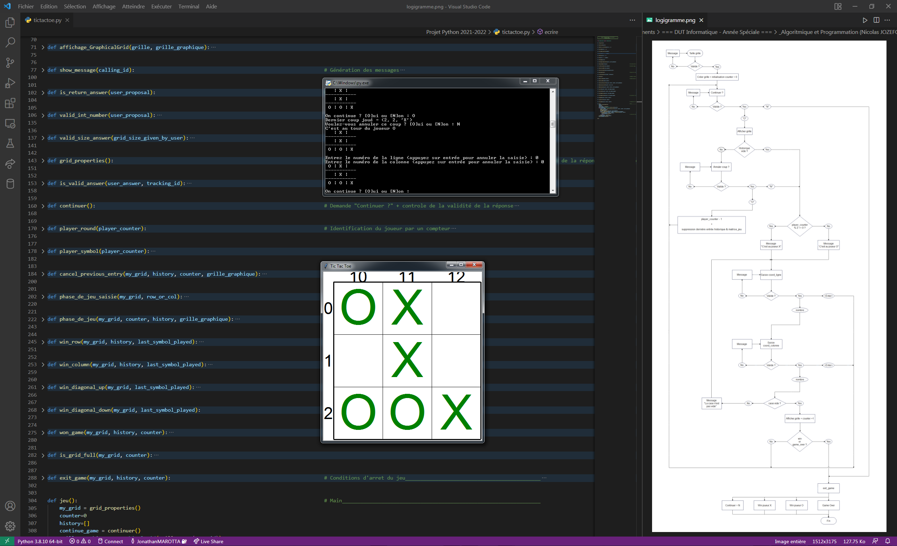

A propos


Jonathan MAROTTA
15 ans d'expérience entre laboratoire d'analyses environnementales et chimie industrielle, je souhaite aujourd'hui me former à un métier dans le domaine de la cybersécurité.
Formation
| 2021-2022 | DUT Informatique en Année Spéciale |
| IUT Metz | |
| 2005-2006 | Licence Professionnelle « Protection de l’Environnement », spécialité « Métrologue de la qualité de l’air » |
| IUT Thionville - Yutz | |
| 2003-2005 | DUT « Génie Biologique », option « Génie de l’Environnement » |
| IUT Thionville - Yutz | |
| 2003 | BAC S, spécialité Sciences et Vie de la Terre |
| Lycée Charlemagne, Thionville |
Expériences professionnelles
| Du 15/02/2019 au 15/08/2021 |
PreZero - Lamesch Responsable d'exploitation - traitement de déchets dangereux |
| (Bettembourg, Luxembourg) |
|
| Du 01/07/2014 au 31/01/2019 |
Eurofins - L.C.D.I. Responsable de secteur détaché - analyses environnementales |
| (Bettembourg, Luxembourg) |
|
| Du 21/07/2006 au 30/06/2014 |
L.C.D.I. Technicien de laboratoire - analyses environnementales |
| (Bettembourg, Luxembourg) |
|
Compétences
Web - Base de données
# HTML5 
# CSS3 
# JavaScript 
# AJAX 
# API REST 
# PHP 
# MySQL
Développement - Réseau
# Assembleur
# C / C++
# Python 
# Java
# Préparation CCNA
# Préparation JNCIA-Junos
# Expérience sur VMWare ESXI 6.5
Communication
Management
# Travail en équipe & gestion
# Gestion de projet
Versionning et travail collaboratif
# Git
Langues
# Français : niveau C2 (langue maternelle)
# Anglais : niveau B2
# Italien : niveau A2
Electronique
# Diagnostic et réparations de cartes logiques
# Micro-soudure composants
SMD, QFP, QFN, BGA
form-factor 0201
Réalisations
# Gestion du projet "rewamping installation physico-chimique de traitement de déchets dangereux" au sein de la société Lamesch (~ 2 millions €)
# Diagnostic et réparations de cartes logiques Apple, laptops toutes marques, ...
# Concours pose de puces sur console : Xavbox - Concours Wiikey 2
# Projet powerwall DIY (capacité : 10kWh)
... démarré en 2018 ...
# Homelab sous ESXi 6.5
Expérience avec VMs, intégration et configuration Cisco Catalyst 4948, vLan, NAS, ...
# Projet de fin d'études : Conception, mise en place et consommation d'un webservice REST (gestion de stock)
# Site Web personnel
Le site sur lequel vous naviguez actuellement ...
# Développement PHP : quizz
# Projet JavaScript : gestionnaire de post-it via API REST
# Projet IHM & MySQL : gestionnaire club de lecture (Lazarus – MySQL Workbench - PHPMyAdmin)
# Développement Python : tic-tac-toe

# Développement C : Ebauche jeu GameBoy
Centres d'intérêt
Projets en électronique et mécanique
# Powerwall DIY (capacité actuelle : 10kWh) ... démarré en 2018 ...
# Divers projets Arduino
# Impression 3D
# Mécanique auto et moto (e.g. : réfection complète d'un moteur d'OPEL Astra F, analyse et modification cartographie Ford FOCUS 3)
Sport